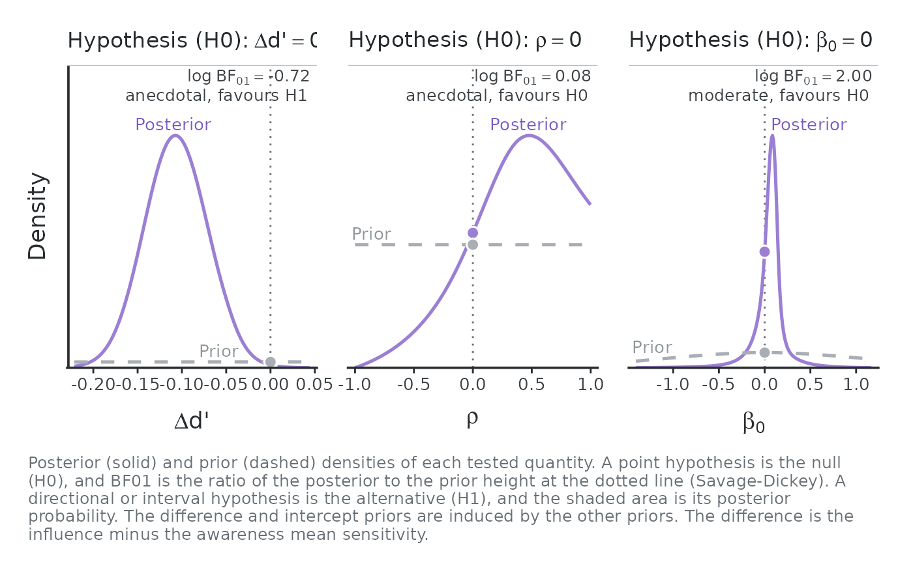
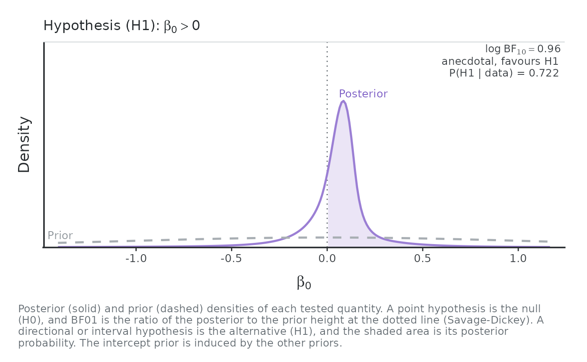

Bayes factors for the hypotheses of a Bayesian hierarchical SDT model
Source:R/bayes-factor.R
usdt_bf.RdTests point, directional and interval hypotheses about the quantities of
the three uSDT hypotheses in a Bayesian hsdt() fit or a custom model
fitted with brms: the difference between mean sensitivities (diff, H1,
reported as \(\Delta d'\), influence minus awareness), their correlation
(rho, H2) and the slope and intercept of the latent regression (slope,
intercept, H3).
Arguments
- fit
A Bayesian
hsdtobject, fitted withestimation = "bayesian", or abrmsfitwhose priors meet the conditions in Details.- hypothesis
Character vector of hypotheses. Each one is
"<quantity> <op> <value>", where the quantity isdiff,rho,slopeorinterceptand the operator is=,<or>(<=and>=are read as<and>), or"<quantity> in [a, b]"and"<quantity> out [a, b]"for a region and its complement. A point statement is the null hypothesis H0, and H1 its negation. An inequality or a region is the alternative H1, and H0 its complement. The default tests the three point nulls.- awareness, influence
For a brms model, the population-level terms of the awareness and influence sensitivities, as in
usdt_tests(). Ignored for anhsdtfit.- level
Credible level of the reported intervals. Defaults to the level of an
hsdtfit, and to 0.95 for a brms model.- plot
Logical. Draw, for each hypothesis, a panel with the prior and posterior of the tested quantity (default
TRUE). Setplot = FALSEinside loops, reports and other functions, and draw the figure later withplot.usdt_bf().- x
A
usdt_bfobject.- digits
Number of decimals printed.
- width
Width of the printed report, in characters.
- ...
Ignored.
Value
An object of class usdt_bf: a data frame with one row per
hypothesis and the columns hypothesis, test ("Savage-Dickey density ratio test", "Directional test" or "Interval test"), H1, H0,
estimate and est.error (posterior mean and SD), conf.low and
conf.high (central credible interval), post.prob (posterior
probability of H1 for a directional or interval test), log_BF10,
BF10, BF01, evidence and favours. It prints one report per
hypothesis, with both log Bayes factors. The prior and posterior curves
are stored, so
plot.usdt_bf() can draw the figure again.
Point hypotheses: the Savage-Dickey density ratio
A point hypothesis \(\theta = c\) compares a model in which \(\theta\) is fixed at \(c\) with the fitted model, in which it is free. When the first is nested in the second and keeps the conditional prior of the other parameters, the Bayes factor is the ratio of the posterior and prior densities at \(c\) (Dickey & Lientz, 1970, Wagenmakers et al., 2010): $$\mathrm{BF}_{01} = p(\theta = c \mid y) / p(\theta = c).$$ The posterior density comes from a logspline fit to the posterior draws. A fit is used only if its distribution function stays within 0.05 of that of the draws at every percentile. When neither logspline algorithm gives such a fit, which happens with the very heavy tails of the intercept and slope when the awareness sensitivities barely vary across subjects, the draws are fitted on the scale \(\mathrm{asinh}((x - m)/s)\), with \(m\) their median and \(s\) their median absolute deviation, and the density is mapped back. Density estimates are least precise far from the posterior mass, so a test value deep in a tail is read on the log scale and with caution.
Directional and interval hypotheses
An inequality or a region is evidence about where the quantity lies, so its
Bayes factor is the ratio of posterior to prior odds of H1:
$$\mathrm{BF}_{10} = \frac{P(H_1 \mid y) / P(H_0 \mid y)}{P(H_1) / P(H_0)}.$$
post.prob reports \(P(H_1 \mid y)\), the share of posterior draws in
H1, and the prior probabilities come from the priors described below. When
every draw falls on one side, the draws cannot bound the Bayes factor and
log_BF10 is infinite.
The prior of each quantity
rho: the marginal of thelkjprior ofusdt_priors(), exact.diff: given the mean awareness sensitivity \(\mu_A\), the difference is the mean influence sensitivity shifted by \(\mu_A\), so its prior density and probabilities are those of the prior of \(\mu_I\) at \(x + \mu_A\), averaged over 100,000 prior draws of \(\mu_A\) (a Rao-Blackwell estimate). With normal priors on both means this is the normal prior of their difference.intercept: induced by the other priors. Given the slope \(\beta_1\) and \(\mu_A\), the intercept is \(\mu_I\) shifted by \(\beta_1 \mu_A\), so its prior is likewise averaged over 100,000 prior draws of the slope and of \(\mu_A\). The prior has no mean or variance, because the slope involves \(1/\sigma_A\).slope: given the ratio \(\sigma_I / \sigma_A\), the slope is a rescaled correlation, so its prior is averaged over 100,000 prior draws of that ratio. Its density is infinite at zero, and the slope always has the sign of the correlation, soslope = 0,slope > 0andslope < 0are tested as the same statements aboutrho. The row still summarises the posterior of the slope.
Under the latent regression parameterization the intercept has a prior of
its own instead of \(\mu_I\), so it is exact like rho, and slope is
as above. The difference is induced:
diff: \(\beta_0 + (\beta_1 - 1) \mu_A\), so its prior is that of the intercept, shifted and averaged over 100,000 prior draws of the slope and of \(\mu_A\). Like the induced intercept above, it has heavy tails and no mean or variance.
The data fix \(\mu_I = \beta_0 + \beta_1 \mu_A\), so under the latent
regression a narrow intercept prior also moves the posterior of the slope
and of rho, even though their priors are independent of it: the Bayes
factors of rho and slope then depend on the intercept prior as well.
These averages work for any family of usdt_priors(). The prior draws use
the random number generator. Call set.seed() first for reproducible
results.
Custom brms models
For a brmsfit, the priors are read from brms::prior_summary(), each
parameter taking its most specific prior (coefficient, then group, then
class), and the quantities get the same priors as above. The model must
have:
a proper prior on each sensitivity term, from the families of
usdt_priors(), e.g.prior(normal(0, 1), class = b). The flat default of brms is improper, and a Bayes factor needs a proper prior.an LKJ(\(\eta\)) prior on the correlations of the group-level term that holds both sensitivities. One correlation of a \(K \times K\) LKJ matrix has the marginal of a \(2 \times 2\) LKJ(\(\eta - 1 + K/2\)), so a block with other terms besides the two sensitivities still has an exact prior for
rho.for
interceptandslope, priors on the two SDs from the families ofusdt_priors(), truncated at zero as brms does. The brms default,student_t(3, 0, 2.5), qualifies.
The Bayes factor of a point hypothesis depends on the prior of the tested quantity: a wider prior puts less density at the tested value and favours the null. The intercept prior is induced by the means, SDs and correlation, so its Bayes factor depends on all of them. Report results with the priors used, and check them with other reasonable priors.
evidence follows the bands of Jeffreys (1961) with the labels of Lee and
Wagenmakers (2013): anecdotal (\(\mathrm{BF} < 3\)), moderate (< 10),
strong (< 30), very strong (< 100) and extreme.
References
Dickey, J. M., & Lientz, B. P. (1970). The weighted likelihood ratio, sharp hypotheses about chances, the order of a Markov chain. The Annals of Mathematical Statistics, 41(1), 214-226. doi:10.1214/aoms/1177697203
Jeffreys, H. (1961). Theory of probability (3rd ed.). Oxford University Press.
Lee, M. D., & Wagenmakers, E.-J. (2013). Bayesian cognitive modeling: A practical course. Cambridge University Press.
Wagenmakers, E.-J., Lodewyckx, T., Kuriyal, H., & Grasman, R. (2010). Bayesian hypothesis testing for psychologists: A tutorial on the Savage-Dickey method. Cognitive Psychology, 60(3), 158-189. doi:10.1016/j.cogpsych.2009.12.001
Examples
# \donttest{
d <- usdt_data_tasks(
awareness = vadillo_awareness,
influence = vadillo_cuing,
subject_col = "subj",
condition_col = "condition",
condition_levels = c(signal = "old", noise = "new"),
response_col = list(awareness = "judged.old", influence = "rt"),
response_levels = list(awareness = c(signal = 1, noise = 0),
influence = c(signal = "faster",
noise = "slower")),
dichotomize = list(awareness = FALSE, influence = TRUE)
)
m <- hsdt(d, estimation = "bayesian", seed = 1)
#> ── Fitting the Bayesian hierarchical SDT model ──────────────────────── rstan ──
#> ℹ 4 chains of 5000 draws after 1000 warmup iterations, 2 at a time.
#> ✔ Sampled 4 chains in 1m 38s.
#> ✔ No divergent transitions.
#> ✔ No transition reached the maximum tree depth (10).
#> ✔ Largest R-hat 1.002, below 1.01.
#> ✔ Smallest effective sample size 1605, above 400.
# The three point nulls, with their figure
set.seed(1)
usdt_bf(m)

#> uSDT hypothesis ─ Savage-Dickey density ratio test
#> ════════════════════════════════════════════════════════════════════════════════
#> Hypothesis (H1) : Δd' != 0
#> Hypothesis (H0) : Δd' = 0
#> Posterior mean : -0.107
#> Posterior SD : 0.036
#> 95% CrI : [-0.177, -0.036]
#> log BF10 : 0.724
#> log BF01 : -0.724
#> Evidence : anecdotal for H1
#> ────────────────────────────────────────────────────────────────────────────────
#>
#> uSDT hypothesis ─ Savage-Dickey density ratio test
#> ════════════════════════════════════════════════════════════════════════════════
#> Hypothesis (H1) : rho != 0
#> Hypothesis (H0) : rho = 0
#> Posterior mean : 0.309
#> Posterior SD : 0.447
#> 95% CrI : [-0.726, 0.964]
#> log BF10 : -0.079
#> log BF01 : 0.079
#> Evidence : anecdotal for H0
#> ────────────────────────────────────────────────────────────────────────────────
#>
#> uSDT hypothesis ─ Savage-Dickey density ratio test
#> ════════════════════════════════════════════════════════════════════════════════
#> Hypothesis (H1) : intercept != 0
#> Hypothesis (H0) : intercept = 0
#> Posterior mean : -0.035
#> Posterior SD : 3.693
#> 95% CrI : [-0.980, 0.737]
#> log BF10 : -1.996
#> log BF01 : 1.996
#> Evidence : moderate for H0
#> ────────────────────────────────────────────────────────────────────────────────
# Unconscious processing as a directional hypothesis, and a region of
# practical equivalence for the difference, without the figure
b <- usdt_bf(m, c("intercept > 0", "diff in [-0.1, 0.1]"), plot = FALSE)
b
#> uSDT hypothesis ─ Directional test
#> ════════════════════════════════════════════════════════════════════════════════
#> Hypothesis (H1) : intercept > 0
#> Hypothesis (H0) : intercept <= 0
#> Posterior mean : -0.035
#> Posterior SD : 3.693
#> 95% CrI : [-0.980, 0.737]
#> Posterior probability (H1) : 0.722
#> log BF10 : 0.955
#> log BF01 : -0.955
#> Evidence : anecdotal for H1
#> ────────────────────────────────────────────────────────────────────────────────
#>
#> uSDT hypothesis ─ Interval test
#> ════════════════════════════════════════════════════════════════════════════════
#> Hypothesis (H1) : Δd' in [-0.1, 0.1]
#> Hypothesis (H0) : Δd' out [-0.1, 0.1]
#> Posterior mean : -0.107
#> Posterior SD : 0.036
#> 95% CrI : [-0.177, -0.036]
#> Posterior probability (H1) : 0.426
#> log BF10 : 2.520
#> log BF01 : -2.520
#> Evidence : strong for H1
#> ────────────────────────────────────────────────────────────────────────────────
plot(b[1, ])

# }